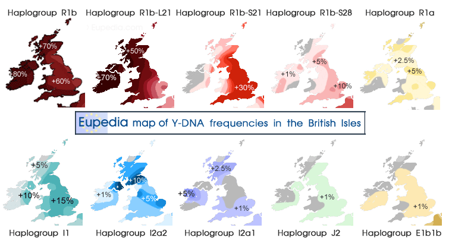

Bar Chart shows amount of R1b out of around 100% of all DNA Haplogroups tested, source data Europedia DNA site - https://www.eupedia.com/genetics/britain_ireland_dna.shtml
R1b is most common in the UK and Ireland. The highest amounts are found in southern Ireland (ROI, EIRE). With the Celtic regions in the UK (Wales, Scotland and N.Ireland) having more proportionally than England which has more Germanic and Nordic DNA also with Briton Celtic DNA. On the page that shows the UK R1b on a map it was not possible to add the R1b data to N.Ireland, but we should use this chart as degree of accuracy to that region.
The areas we can see in England that have quite a bit less R1b than the rest of England is primarily where the Anglo-Saxon-Jutes-Frisian (North Germanic) and Nordic (Vikings from Denmark and Norway) tribes settled.
↓↓↓Source for PNG UK Haplogroup Picture Map of Y-DNA UK: - www.europedia.com↓↓↓
↑↑↑Source for PNG UK Haplogroup Picture Map of Y-DNA UK: - www.europedia.com↑↑↑